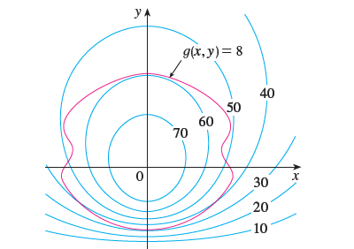

Pictured are a contour map of \(f\) and a curve with equation \(g(x, y) = 8\). Estimate the maximum and minimum values of \(f\) subject to the constraint that \(g(x, y) = 8\). Explain your reasoning. 